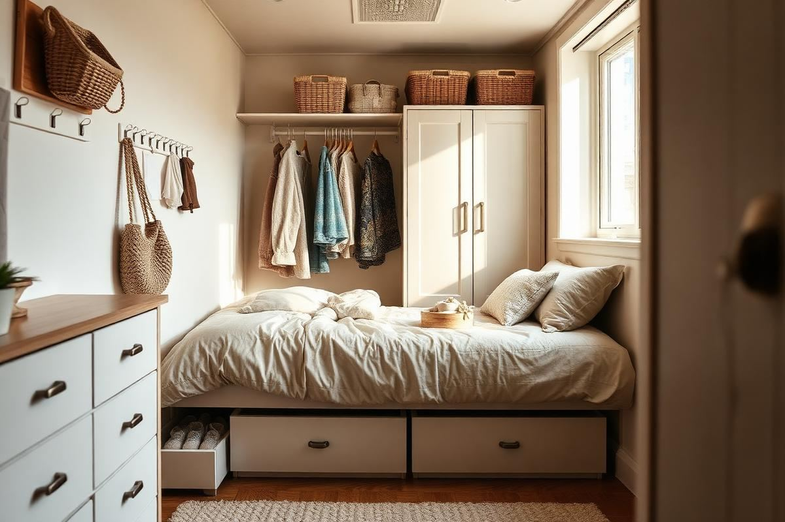
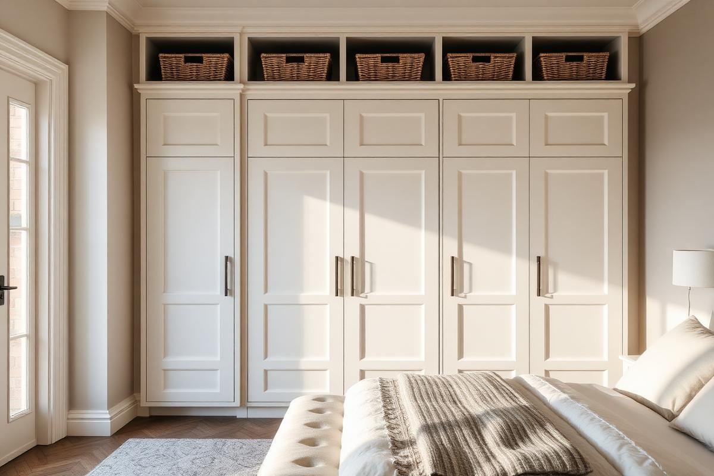
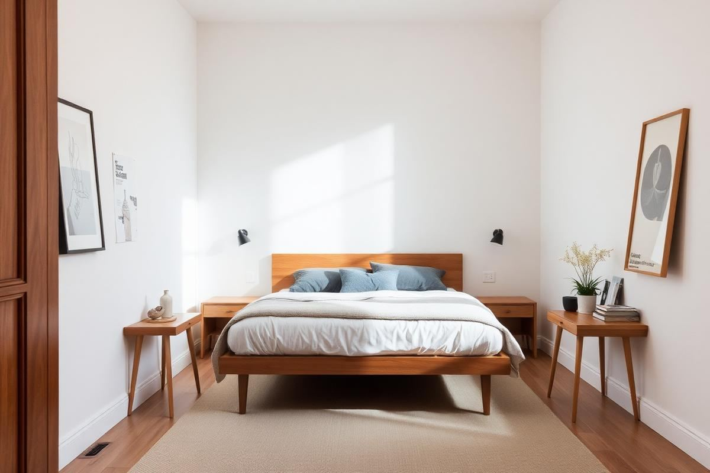
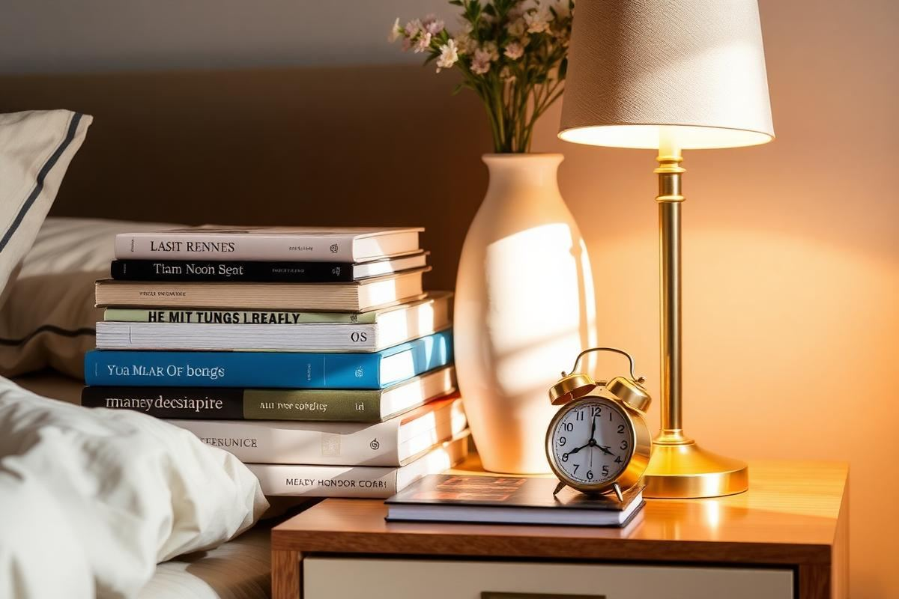
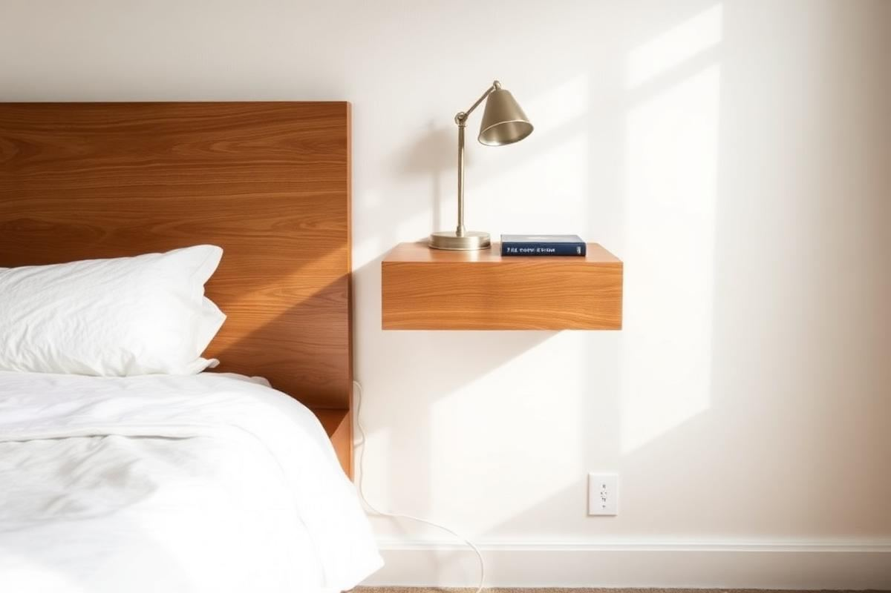

Bedroom Storage Ideas for Rooms With No Closet Space

Most bedrooms are not short of space so much as short of the right kind of space. A room can have four square metres of clear floor and still feel chaotic because there is nowhere to put a jumper down. When I plan storage for a bedroom, I am looking for cubic feet rather than square feet, and the majority of it is usually hiding in three places: under the bed, above eye level, and behind the door.
Audit before you buy anything
Take everything out of the room's existing storage and sort it into four piles: daily, weekly, seasonal, and sentimental. Daily items need to be reachable without moving anything else. Weekly can sit behind a door. Seasonal belongs under the bed or on the top shelf. Sentimental should honestly leave the bedroom entirely, because it is the category that quietly consumes the best storage in the house.
Only after that audit do you know what you are buying for. I have watched people spend a lot on a wardrobe that turned out to be the wrong proportion of hanging to shelving, purely because they skipped this step.
The most overlooked space: under the bed
A standard double bed has roughly 28 cubic feet under it. That is more volume than most chests of drawers. The options, in order of how much they hold: an ottoman or gas-lift bed frame, which gives you the entire footprint; a divan with two or four built-in drawers; or the cheapest route, flat rolling boxes on a standard frame.
- Measure the clearance under your frame before buying boxes — 6 to 8 inches is typical, and boxes are often 7.
- Use fabric-sided boxes with a rigid base; hard plastic scrapes floors and rattles.
- Store only seasonal or infrequent items here; anything daily will not survive the effort.
- Add a bed skirt or a low valance if the boxes are visible and mismatched.
Go vertical to the ceiling
The wall above the door and the strip between the top of a wardrobe and the ceiling are nearly always wasted. A run of shelving at 78 to 84 inches, with matching lidded baskets, adds serious capacity without touching the floor area that makes a room feel small. Because it is above the sightline, it barely registers visually as long as the containers match.

Behind the door is the other free zone. Over-door hooks, a slim shoe rack, or a peg rail at 60 inches all take space that was doing nothing, and none of them require drilling into a wall if you rent.
Wardrobe alternatives that look intentional
In a room with no closet, an exposed clothing rail can look either deliberate or like moving day, and the difference comes down to three things: a rail in a solid finish rather than chrome, hangers that all match, and a curtain or panel you can pull across at night. A wall-mounted rail at 66 inches with a shelf above it holds as much as a small wardrobe at a fraction of the depth.
If the room can spare 24 inches of depth, a single tall wardrobe in the same colour as the wall almost disappears. Painting joinery wall colour is the oldest trick in the small-room book and it still works better than anything else I have tried.
Bedside storage that hides the mess
A bedside table with an open shelf is a magnet for books, chargers, glasses, and receipts. Choose one with at least one drawer, and give that drawer a single job — everything you want out of sight in ten seconds. If floor space is tight, a wall-mounted shelf or a floating nightstand at 24 to 26 inches from the floor frees the area beneath for a basket.
- One drawer for cables, chargers, and medication.
- One surface object maximum besides the lamp.
- A small tray for jewellery and glasses so they never migrate to the dresser.
- A hook on the side of the frame for headphones or a robe.
Run a seasonal rotation
Twice a year, swap what is accessible. Heavy knits and boots go under the bed in April; linen and sandals go up there in October. This one habit effectively doubles your usable storage, because you are only ever storing half a wardrobe at prime height. Vacuum bags help for bulky duvets, but do not use them for wool or down long term — compression damages the loft permanently.
Keeping storage visually calm
Storage that is visible needs to read as one continuous surface rather than a collection of objects. That means matching baskets in a single material, closed fronts instead of open shelves wherever possible, and handles in one finish across the room. A bedroom is a place for rest, and every extra visual line — a different basket weave, a mismatched box, an exposed pile of folded clothes — costs you a small amount of that.
Limit yourself to two container types across the whole room. It sounds restrictive and it is exactly why organised bedrooms photograph so well.
A worked plan for a 10x10 room
- Ottoman bed frame against the longest wall: roughly 28 cubic feet for bedding and seasonal clothes.
- Single 24-inch-deep wardrobe painted wall colour, with a shelf and matching baskets above it.
- Floating nightstands both sides with one drawer each, freeing the floor for a basket.
- Peg rail behind the door at 60 inches for bags, robes, and tomorrow's outfit.
- One narrow chest under the window at 32 inches high, doubling as a surface for a lamp.
That combination has fitted a full two-person wardrobe into a room with no closet more than once, and it leaves the centre of the floor clear — which is what actually makes a bedroom feel restful.
Key takeaways
- Audit belongings into daily, weekly, seasonal, and sentimental before buying storage.
- Under the bed holds around 28 cubic feet — use it for seasonal items only.
- Take shelving above eye level and use the back of the door.
- Paint any large wardrobe the same colour as the wall.
- Stick to two container types so visible storage stays calm.
Frequently asked questions
How much storage is under a standard double bed?
Roughly 28 cubic feet with an ottoman or gas-lift frame — more volume than most chests of drawers.
What can I do in a bedroom with no closet?
Use a wall-mounted rail at 66 inches with a shelf above, or a single tall wardrobe painted the same colour as the wall so it visually disappears.
Is under-bed storage a bad idea?
Not at all, as long as you only store seasonal items there. Daily items stored under a bed always end up on the floor instead.
How do I make visible storage look tidy?
Limit yourself to two container types across the room and keep handles in one finish. Matching containers read as one band rather than clutter.
Should I use vacuum bags for winter bedding?
For synthetic bedding, yes. Avoid long-term compression for wool and down, which permanently loses loft.
Sophia Bennett is a certified interior stylist and the senior editor at Styleire. She has spent more than eight years helping homeowners and renters create warm, functional interiors, with hands-on experience across small city apartments and family homes. Her work has been informed by close collaboration with independent designers, craftspeople, and product testers.
View full profile →Related reading

Small Bedroom Layout Ideas That Free Up Floor Space
A small bedroom does not need to feel cramped. It needs a layout that respects the walking path and the light.

How to Style a Bedside Table (5 Simple Rules)
How to Style a Bedside Table (5 Simple Rules) — a clear, editor-tested guide covering the essentials without the filler.

DIY Floating Nightstand: A Weekend Build Anyone Can Do
A floating nightstand frees up floor space, fits beside the narrowest bed, and costs a fraction of a shop-bought version. Here is the full build, with real measurements.